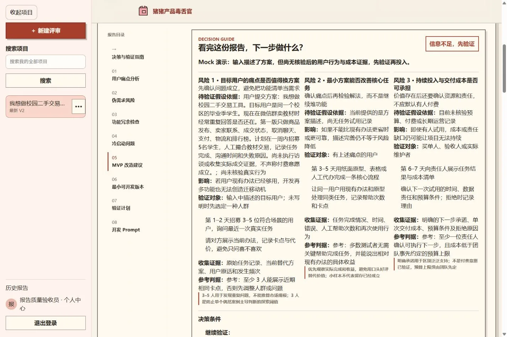
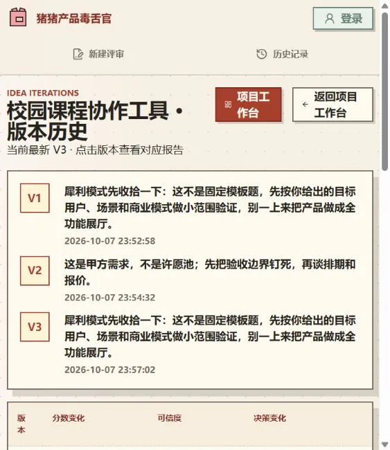
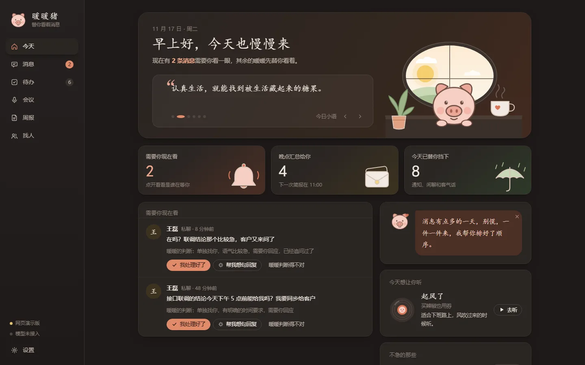
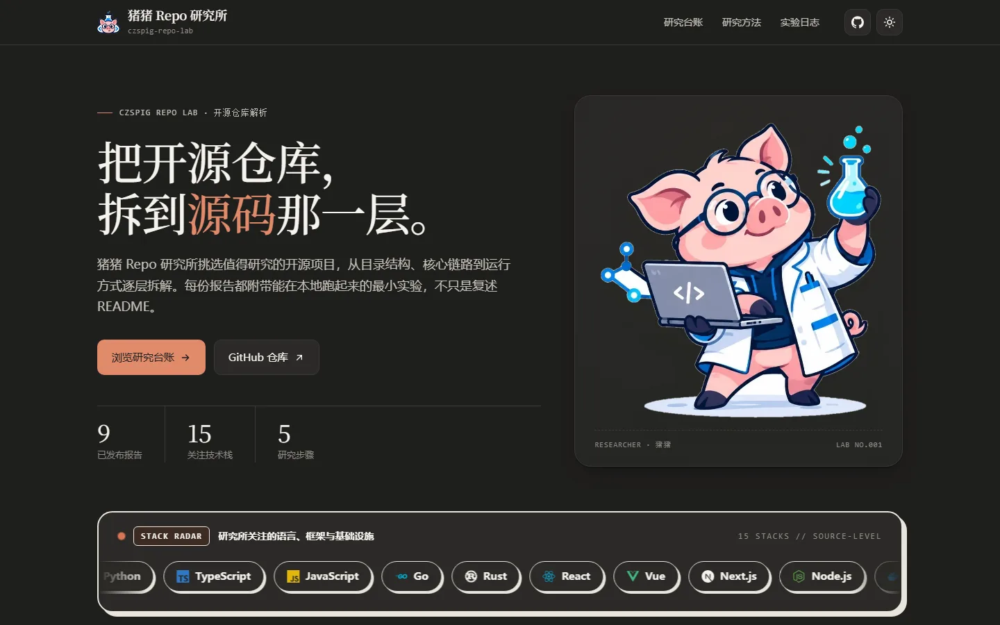
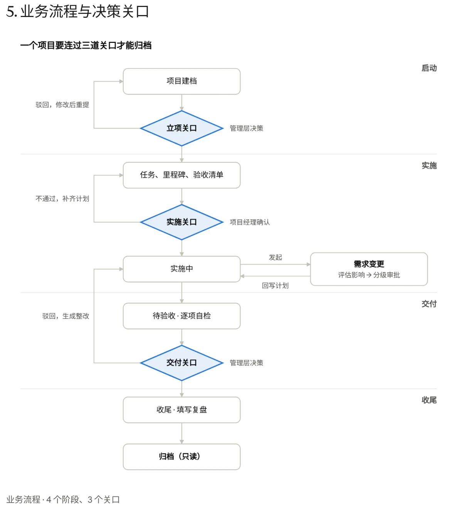
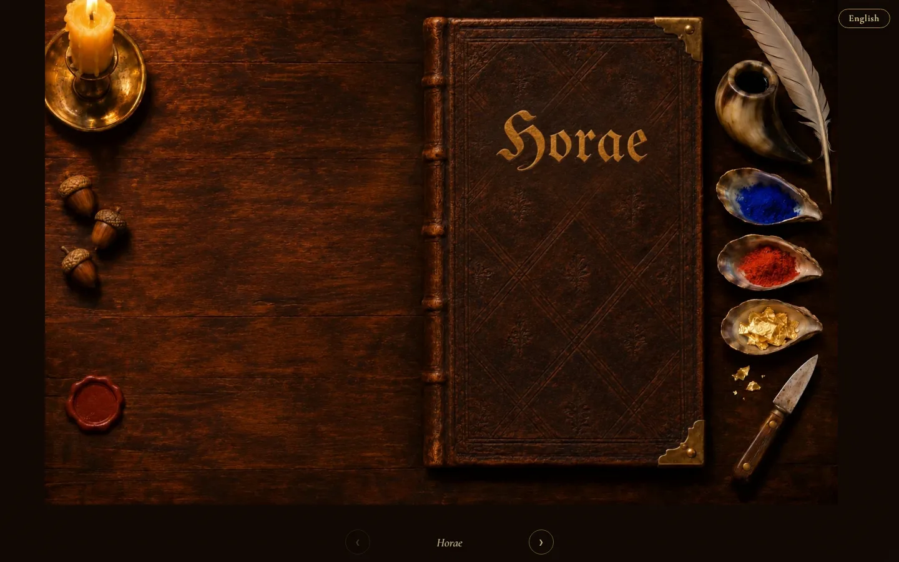

10.18 — 10.24
搭架子，找方向
- 参考别人的个人网站，博客加上作品集页面
- 开了 Repo 研究所、求职助手两个仓库
- 改一页简历，投 AI 产品经理实习
- 逆向拆解 GPT Researcher，学 Agent 怎么搭
- Sidex-PMS 项目管理平台：先写 PRD
- 产品毒舌官前端 review
这一个月，我在 Claude Code 里开了四十多次对话，做了四个 AI 产品、一个项目管理平台原型、一座虚拟美术馆、一本可以翻的书，还有这个博客本身。这页是那一个月的流水账。
按对话日期排，条形长短是那段时间的对话数
点截图可以放大


犀利但鼓励的 AI 产品评审
输入一个产品想法，选毒舌程度（温和 / 犀利 / 地狱），它给出评分、伪需求风险、MVP 建议和验证计划，最后导出一段开发 Prompt。同一个想法可以改成 V1、V2、V3，对比每一版改了什么。
这个月和 Claude 做的主要是 review：查前端问题、整理面试用的产品文档、评估能不能上线。
GitHub →
替你盯着飞书消息的桌面助手
规则先筛，拿不准的交给模型，把消息分成“要马上看”“晚点汇总”“不用看”三档。要紧的立刻弹通知，不急的攒成定时简报。它只提醒，不替我回复任何人。
在线体验 →
八个 AI 围一桌玩狼人杀
Claude、ChatGPT、Gemini、DeepSeek、Kimi、Qwen、GLM、Grok 各坐一个位置。观众开着上帝视角，看谁在夜里动手、谁在白天说谎，局后还能逐轮复盘。后端是零依赖的 Node，不配 key 时用离线模板跑，不花钱。
GitHub →
把开源仓库拆到源码那一层
按“取样 → 测绘 → 解剖 → 复现 → 结论”五步读开源项目，每份报告附一个能在本地跑起来的最小实验。拆 GPT Researcher 就是从这里开始的。
进去看看 →
展陈类项目的管理平台原型
先写 PRD，把“一个项目要连过三道关口才能归档”画清楚，再在若依框架上做原型。重点是一条线：成员更新任务，系统按规则标出风险，AI 汇总进度、解释风险，项目经理核对后存成确认版周报。
这是作品集项目，没有上线，演示数据都是编的。
图大多由 ChatGPT 画，页面和代码出自 Claude



在本地跑的岗位筛选助手，对照简历给 BOSS 直聘岗位打分，只读，不替我发消息。
作为腾讯云校园大使，在 ima 上搭的知识库，放进了作品集。
把一个开源研究 Agent 逆向拆开，看规划、检索、写报告怎么串起来。
从包豪斯到 Liquid Glass，写成一张苹果官网风格的长页。
让 Fable 5.2 封存今天，还有一封要到 2027 年 11 月才解封的信。
音乐播放器、相册、光暗开关、本地工作台，几乎每次对话都顺手改一点。
前两周做的是评审、求职、管理这类“有用”的工具；最后一周做的几乎都是书、美术馆、油画这类“好看”的东西。
Sidex-PMS 先写 PRD，毒舌官先写产品文档。把需求说清楚的那几次，Claude 做出来的东西返工最少。
ChatGPT 画图，Claude 写页面和代码，DeepSeek 在产品里跑推理。一个作品经常是三家一起完成的。